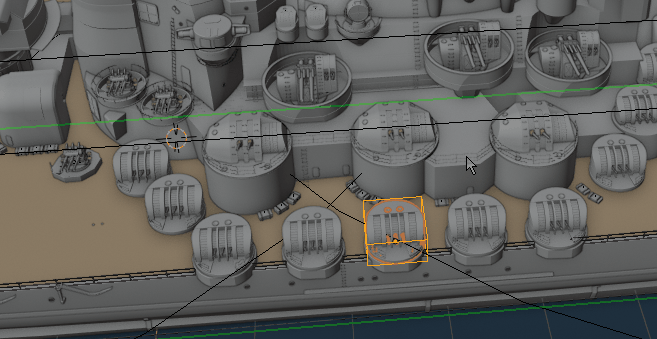
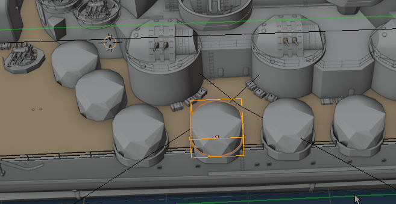
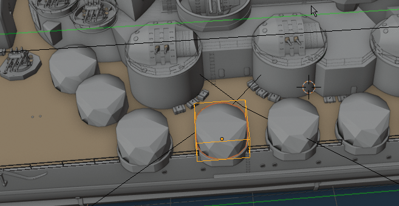

Proxies¶
Creating Proxies for group will create low-poly version of current group objects , and use it for displaying in viewport. Original group objects are not being affected, and can be brought back with 'Proxy Switch' button.
Create Proxy¶
 Generating proxy for selected group There are three methods for generating low poly version of proxy object under F9 hotkey:
- Convex Hull (Fastest) - but gives crude approximation of hi-poly mesh.
- Only Decimate - use Decimate modifier
- Remesh And Decim(Slow) - use remesh modifier and Decimate - useful in some cases
Proxy Switch¶
 Generating proxy for selected group
Proxy Switch - will lets you switch form original object to proxy, and vice versa.
Delete Proxy¶
 Removes proxy for selected group
Removes Proxy object, and unlinks it from original collection.